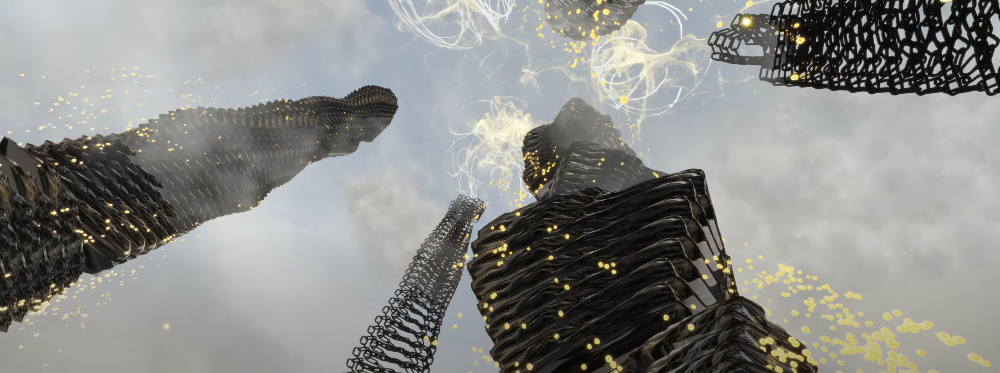

Perpetua is a project in speculative architecture using Unity3D to imagine a city. Using Italo Calvino's Invisible Cities as inspiration, our city Perpetua explores surrealist methods to demonstrate housing scarcity and class divisions.
Perpetua was projected at Planet One New Bund, Shanghai December 2021. It was recognized by Unity Shanghai as a top three project in its showcase.
Music by Beach House.
Made in collaboration with Jennifer Cheung.